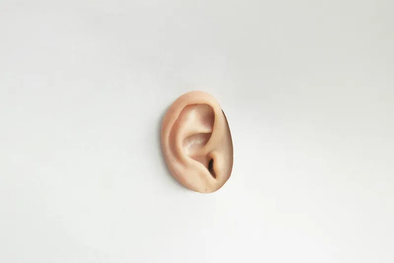
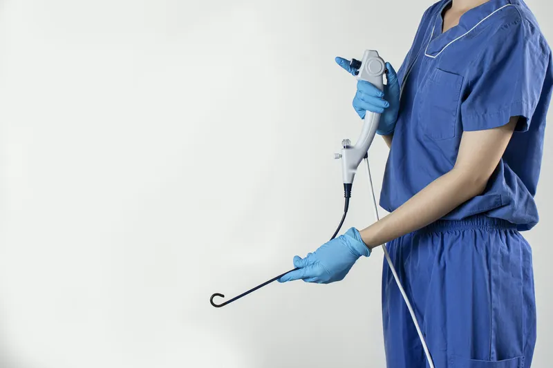
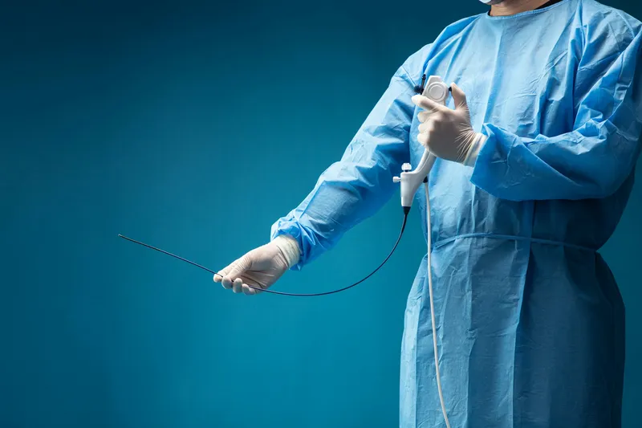
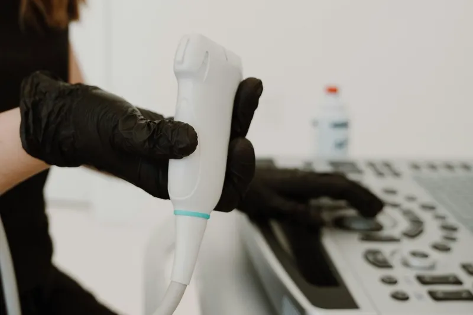
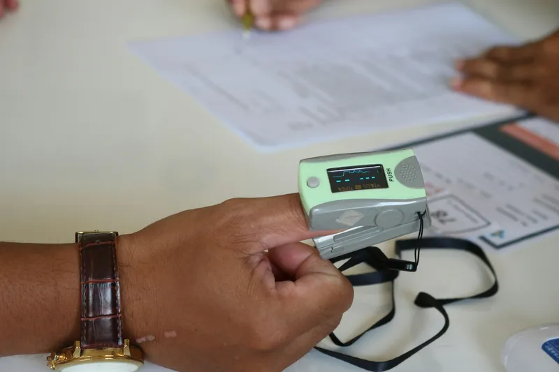

Consultation
Examination with an endoscope or microscope in the OPD, usually in under 30 minutes.
Twenty-six ENT treatments across five specialties. Each row shows whether it is done in the OPD, as day-care, or with an overnight stay.

Hearing, balance and infections of the outer, middle and inner ear.

Breathing, sinus infections, allergy and smell.

Tonsils, voice box, swallowing and reflux.

Thyroid, salivary glands and neck lumps.

Snoring and obstructive sleep apnoea.
Try another word, such as “ear”, “snoring” or “thyroid”, or clear the filters.
Every procedure starts with a consultation. Nothing is booked for theatre until you and your specialist agree on a plan.
Examination with an endoscope or microscope in the OPD, usually in under 30 minutes.
Hearing tests, endoscopy, ultrasound and allergy panels are done in the same building.
A written cost estimate in ₹ and cashless pre-authorisation with most insurers.
Review visits are added to your patient portal, with video follow-ups where suitable.
Book a consultation first. Procedures are planned only after examination.